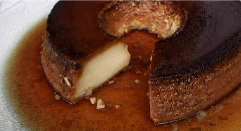

🍮
Textura delicada
O banho-maria ajuda o pudim a cozinhar suavemente e ficar lisinho.
Uma releitura acolhedora do pudim: a sobremesa brasileira que transforma poucos ingredientes em uma memória afetiva completa.

O pudim tem raízes em preparos europeus à base de leite, ovos e açúcar. No Brasil, ganhou identidade própria com a calda de caramelo e presença garantida em almoços de família.
O resultado? Uma receita democrática, feita para dividir.
Alguns detalhes deixam essa sobremesa ainda mais interessante.
O banho-maria ajuda o pudim a cozinhar suavemente e ficar lisinho.
O açúcar derrete e carameliza: por isso ganha cor, aroma e sabor intensos.
Mais ovos, leite condensado ou coco: pequenas escolhas criam grandes lembranças.